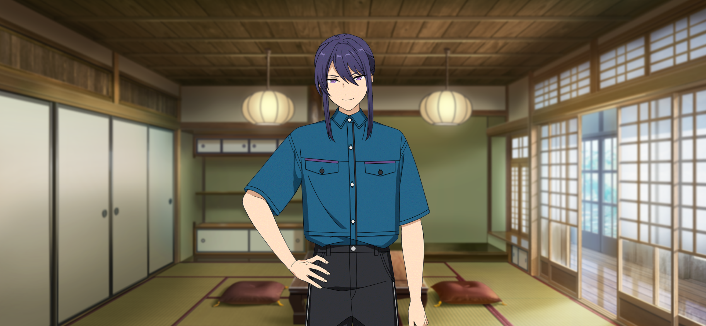

The Legend of KAGETSU | Wind of Silver, Dancing Autumn Leaves
Wind of Silver, Dancing Autumn Leaves 1

… Hasumi. Kanzaki. Sorry, I’m done for…1 It’s okay if ya leave me here. Live on in good health in my stead, ‘kay…
A dying wish!? Hold on, Kiryu-dono! However things may be, you mustn’t die when you’re still so young!
I’m sorry. It had completely slipped my mind that you get motion sick, Kiryu-dono.
Sorry, Kiryu. I’d made the spur-of-the-moment decision to come to Okinawa too…
What’s more, we didn’t have the time to spare to take a boat this time,2 so we took a flight, which Kiryu hates the most.
… Sorry, sorry. I’m done for—
Mn~nn. Kiryu gets really weak when his motion sickness comes around. And still, it’s even worse than it was when we went by boat last time.
Are you alright, Kiryu? If your heart is weak, your body will be weak. Bolster your spirit! You’re a strong young man!
U–Urgh… Qu–Quit it, don’t rub my back like that while sayin’ that… I’m really gonna fuckin’ hurl my guts out. I’m seriously, seriously tryin’ to keep it in.
I see, sorry. I’ll go buy you some nice, cold water, then.
Nah, it’s fine. I appreciate the thought..
I'm feelin’ better lil’ by lil’, just gimme a bit more time to rest ‘n I should be able to get goin’ again, so… Please, I’m beggin’ you, leave me alone ‘til then.
Shit. What the hell’s with lumps of metal flyin’ in the air, anyways. Humans weren’t built to be up there.
Not once have we ever sprouted wings. Don't look down on the long stretch of history that goes into evolution… Damn it.
Mm~mn. Is Kiryu-dono really alright? He's gotten to the point of cursing the theory of evolution.
I suppose the extreme situation left him completely disoriented. Let’s just do as he wanted and leave him alone for now.
Right. Well then, while Kiryu-dono’s recovering, we should think about our next steps.
Hasumi-dono. How did calling Taki go? Did you manage to reach him?
… No good. It seems like he shut off his phone after our last call.
But that’s a problem. If we really can't get in touch with Taki, we don't know which direction we should go. Maybe we were too hasty...
But Taki's behavior doesn’t make sense at all. Our actions won’t be for naught if he's gotten himself involved in some kind of trouble.
Hasumi-dono. If we don’t know Taki’s whereabouts, I have an idea.
Hm? What is it?
How about we try asking passersby in town about it?
Ask the townspeople…? It's a bit of a long shot that that would help us garner anything new, isn't it?
Pardon the quick aside, but this is according to my distant relatives who live in a tiny village.
Everyone in the community knows of everyone else who lives there. Because of that, even if you’re unfamiliar with where you’re at, if you ask someone, they'll guide you to where they live.
When it comes to towns and villages that are more closed off, everyone tends to be acquainted with each other and such. I figured if we have no other options, it might be a good idea to try it out.
Hmm… You’re right. We certainly aren’t learning anything new about Taki just standing here. It’s probably a better use of our time if we go and ask about him around town.
Got it. We’ll go ask around while we wait for Kiryu to recover. In doing so, we might be able to put some clues together about Taki’s phone call.

(Sigh)... I’ve had it real fuckin’ rough… They’d better invent a “door to anywhere”3 real fuckin’ soon so vehicles can get wiped off the face of the map…— hm?
(Humming)...♪
Yer a lil’ too giddy, Kanzaki. Keep it up and Taki’s not gonna be the only lost kid ‘round here.
Forgive me, Kiryu-dono. As expected, Okinawa's towns are curious, and they have all kinds of things that catch your attention. Last time we were here, I was preoccupied with things like “Ess-Ess”4 and orders.
Well, I get how ya feel. I was lookin’ forward to just gettin’ to sightsee this time, y’know. I’m already bad with vehicles as it is, goin’ to far-off places is tough, though.
Well, if we can find Taki quick enough, we might have time to do a little sightseeing around town.
Now then. Looks like we got to a place with a sizable amount of foot traffic, more or less. Who should we ask about Taki…?
Naturally, It’d look way too suspicious to suddenly stop a passerby to ask…
Here, I’ll go ask that shopkeeper over there
Pardon me, are you busy?

Hm? Menso~re5, how may I help you~?
(Displaying his phone) I'm looking for the person in this photo: do you happen to know who this is? His name is Taki Ibuki and apparently, he’s here in Okinawa.
Takiii…?
(Figures, of course they wouldn’t know…)
Hmm? Oh. That’s Majimun’s6 little oni~
What!? You know who he is!?
Hahaha! Obviously~ Nobody who lives around here doesn’t know ‘em~ That little oni is Majimun’s grandchild~
Majimun…?
So you’re looking for the little oni, hm~ If you want to meet up with him, you should go to Majimun’s place~
Here, I’ll jot down a map~ Please wait a moment, ‘kay~?

... “Majimun”7. It’s a generic term for evil spirits and youkai in the Okinawa Prefecture and the Amami Islands of the Kagoshima Prefecture. That’s what it said on the internet, anyways.
Taki’s grandfather is a youkai? … Does that mean Taki is one too…?
So he was a real life youkai… Up until now, I never particularly believed in that sort of thing, though.
Are you someone who takes things at face value? There’s no way that’s it. “Majimun” is probably just a nickname the locals gave Taki’s grandfather.
Well? Here’s the place that shopkeep marked on the map for us.
So this is the home that Taki and that Majimun guy live in, huh?
There’s a nameplate… “Gajumaru Home”8 Taki’s grandpa sure has a weird last name.
It seems like a family name Sengoku would be excited to have– very ninja-esque. “Gajuu-maru” Shinobu.
Oi. This isn’t the time for dumb conversations, is it?
Hey, it can’t be helped. Look, that’s what it says on the nameplate.
Gajumaru is the name of a plant. It’s not a last name.
With a name like that, this place might not just be a home, but some kind of facility too.
— Hasumi-dono, Kiryu-dono! Please look! There– Running into the garden– it’s Taki!
What!?
Wind of Silver, Dancing Autumn Leaves 2

— Taki! You baaaastard!
Uuuweh!?
Only ever acting as you please! Get over here right now! I’ll hack off that half-willed disposition for you!
Taki, you little—! I got stuck on some plane, thanks to you, you got it!? Time for you to settle your debts, hear me!?
Hasumi-san, Kanzaki-san, Kiryu-san…?
What are you guys doing here~? Am I having some kinda convenient dream…?
What are you playing stupid for? This isn’t a dream. After your call, we hopped on a plane right away to get here.
Don’t think you can just end things with a single nonsense phone call. We don’t plan on going back home until we hear a proper reason from your very own mouth, Taki.
That’s…!
…
… So you went out of your way to come all the way south? What hard work for something so pointless, huh~ just how nice can you guys be~ Y’know you’d be real easy pickings in America in an instant, right~?
Sorry you took the time to come all the way here, but I hafta head out from here now.
I already said everything in that phone call. I’ve got nothing left to say to you~
Got it? If you do, go back home now~
Tell us why you dropped out of the live.

Aww man, how surprisingly insistent~ Hasumi-san! You want a reason? Then I’ll say it. It’s as simple as this: I got bored~ That’s all it is. Happy now!?
You—! How much more dishonorable and ungrateful can you be!
Seeing how diligently you’d practiced, I’d thought there were signs of promise, but! I was a fool to have such expectations for you!

…—
It’s annoying, getting expectations put on me when I didn’t ask for them~ I’m an oni. I don’t belong anywhere, my very existence brings misfortune to people.
… Someone like me shouldn’t have stepped into a community of humans, y’know~
What are you talking about…? You’re a human.
Nope~ I’m an oni, y’know~ An oni that wanted to be human. Or maybe, an oni that tried to become human.
So Taki really was a youkai after all?
That’s absurd… Well, whatever, it doesn’t matter if you’re an oni or a human. If you got sick of it, tell us how things got to that point. Besides, there’s something I need to talk to you about too—
You’ve been persistent for a while now, Hasumi-san…
...!
If you’re saying you’re not going back, I’ll make you go back~ You know my strength, right~? I don’t think I’d lose, even against all three of you~
You wouldn’t want to get something like injuries right before a really important live, now would you~?
… Oi. Danna. This bloodlust… looks like Taki's serious ‘bout it.
...
Fine by me. If that’s what you want to do, do it.

Hah…? Is this your true nature, Hasumi-san? Ahh, maybe you think I’m bluffing? I’m serious—
I don’t think you’re bluffing. Your spirit speaks for itself.
So, if that brings you peace of mind, you can do as you like. I didn’t come here half-hearted in the first place.
Wh– What’re you…
We’re not going anywhere until we talk it out with you.
U– Uuu…
— Y-You…
You…?

You idiOOOOOOT! If you wanna stay here so bad, go ahead and do whatever you want, ‘kay?! I don't care anymore, you hear me~!?
Even though… Even though you—! You taught me it stood for the shape of compassion, so—! And yet you— idiOOOOOT!

...
...
Err… Taki said what he wanted to say, and then completely ran off…?
… He took off with such force, we forgot to stop him.
What was that all about? He went all brat-mode — Actually, come to think of it, Taki is still a kid, huh? He’s younger than Tetsu after all.
Even so, what do we do, Hasumi? Taki— the whole reason we came here — ran off. Should we go after him? With how crazy athletic Taki is, it’s gonna be real hard to catch up with him from here...
Hmm. With Taki gone, there’s no point staying. We’ll have to go after him.
Outsiders! 9 What’re you doing on my land~? Here to steal more than just the deed, huh!?
Whoa!? That surprised me…!
Hasumi-dono. An old man has come out of the house… Could that gentleman be Taki’s grandfather?
And he’s all banged up, too. Old Man, you alright? What happened to you?
? You’re not punks…?
… Could you lot be the ones called AKATSUKI~?
Wind of Silver, Dancing Autumn Leaves 3
Everyone. Come, please, have some tea ♪
I’m sorry for letting my guests make the tea~ If I weren’t injured, I’d have made it myself~
Think nothing of it. I enjoy brewing tea.
By the way, Elder-sir,10 there seem to be quite a lot of children here. Are they all your grandchildren?
Hahaha. Not quite~ These little ones are my grandchildren in every way but blood~ This is an orphanage, you see~
Orphanage? Does that mean Taki’s…?
Ahh, Ibuki’s different~ I raised him just like the other kids, but he’s my true grandchild~
Well, even without the blood relation, Ibuki probably thinks of this lot like a big pack of siblings.11
Well? Why did you all come here~? I heard from Ibuki that you’re idols working over on the mainland~
The truth is, Taki was supposed to perform on stage with us as our guest for our upcoming live.
All of a sudden, he told us to pretend the whole thing never happened, without giving a reason...
We couldn’t accept it, so we went after him in order to talk with him.
Hahah, I see~ That damn fool... “Taking some time off”, my ass~ Don't go lying to your grandpa.
Hasumi-san, was it? I’m real sorry. I’m the reason Ibuki came rushing back home~
What do you mean by…?
There’s been talk of some big entertainment facility being built on Hoshijima~12
There’s a recreational facility…?
… It’s probably ATLANTIS, the amusement park. I’m pretty sure Himemiya and Eichi are involved with it.
From what I overheard, they even managed to get the local residents on board, and ATLANTIS’s operations and construction had begun again, but... Are there disagreements over ATLANTIS again?13
Ahh, no. That so-called “Atorantisu”14 is whatever~ If anything, I welcome it.
I don’t care for all the racket, but if it’s got talk starting up about Okinawa, there’s a lot of people who are gonna be pleased with it~ Seems the kids are pleased too.
But things that are too-good-to-be-true like that always come with things like an underside~ If something looks to be profitable, there are gonna be bad guys who zero in on it~
From here on out, Okinawa is going to be more prominent, so the price of the land that’s here is getting awfully high, now~
And so, rogues from the mainland are targeting this land.
I used to be feared as Oni back in the day, but ever since I threw out my back a few years ago, I haven’t been in the same shape~
They forced the deed from me just yesterday~
Oi, oi. Is that where those injuries came from…?
Hahaha. What a damn shame~ I can’t beat out Father Time and what he’s got in store for me~
Wh– What horrific violence to enact against an elderly man…! Where are those thugs!? Their blood will become the rust on my sword in an instant!
Ohh, wow, you’re a real passionate one, huh~ Just hearing you say that is enough for me, you~ know~? I know myself— I won’t let Ibuki’s visitors take on that responsibility~
Besides, that kid flew out in a rage, so~ It’ll be fine~
Could it be that the reason Taki flew out of here a moment ago was… That he was heading out to where the rogues are to take back the stolen deed?
Yes, that’s right~ I had gotten in touch with him yesterday, and he’d come back this morning~ It surprised even me.
Damn shame— I can’t do anything myself, so I can do nothing but rely on my grandchild, but...
I have to protect this place no matter what it takes~ Without it, these kids will have nowhere left to turn~
So I’m really glad Ibuki came back to help~ But I feel bad for the trouble it caused you all~
… Damn it, that Taki. That’s a proper reason to have, right? Why didn’t he mention it earlier? If he’d just told us that, there were plenty of ways we could have worked around it.
That’s right. Even if you were to ask me to choose between a job or my family, it would be difficult to make a swift decision and act upon it— much less condemn Taki for choosing his family. I can’t do that.
Even so, the way he was acting back there— rejecting us point-blank without divulging the reason…
… So that’s how it is. I get it now.
? What’s the matter, Hasumi?
The way he acted before— Taki was probably putting on an act.
What do you mean by that…?
I’ve been thinking through what Taki had said back there— “You taught me it stood for the shape of compassion, so—!” — and what it meant…
It was a series of lies to act as etiquette; he almost certainly wanted to try and keep AKATSUKI from getting wrapped up in it. He’s an idiot in every sense of the word. How incorrigible.
… Er, sorry. I spoke badly of your grandchild…
Hahaha. It’s fine, Ibuki’s always been a big old dolt~ That aside, you're all waiting for him, right~?
Yes. Having heard everything that was said, I realize there’s still things I haven’t said yet.
That right? It’s gotten dark out, so stay here for the night~ We’ve got plenty of rooms.
I don’t know how roughed up he’ll be when he gets back, but he’ll be home by around midnight~ Let’s leave the conversation for tomorrow~ How’s that sound~?
Wind of Silver, Dancing Autumn Leaves 4
(Yawn) Ahh…
Good morning, Kiryu.
I’ve never slept in such a ginormous hall like this, so I had a hard time noddin’ off.
Is that so? It made me feel nostalgic and reminded me of home, though.
Your house is huge as hell, Kanzaki. Anyways, what’re you guys talkin’ about.
We were discussing whether we should make breakfast as thanks for letting us stay the night.
Ohh, that sounds pretty nice, huh? I’m not as good as you, Kanzaki, but I can help with the small things.
Ibuki! Where are you~ Ibuki!
… Hm? Was that Taki’s grandfather’s voice just now?
Good morning. What’s going on?
Ahh, Hasumi-san?
It’s just that… I don’t know where Ibuki's gone~ It looks like he didn’t return from yesterday.
Eh? That sounds pretty serious, doesn’t it…?
I doubt Ibuki would lose to a bunch of rogues like those guys, though~
Up until now, they knew they couldn't win when Ibuki was here, so they didn’t make a move on this place.
If that's the case, then it's all the more worrisome that he hasn't returned home yet...
… Though, he is the kinda guy who’s sloppy and screws up at the last second~ Could something unexpected have happened…?
…
…
… U–...gugh…?
(How long have I been out…? It’s light outside…? Is it already morning?)
(It hurts… Since I didn’t fight back, they beat me up to their heart’s content.)
(Where are…?)
(... Ahh, those guys are bunched up all the way over there, having a lighthearted chat~ ‘Cuz they’re in such high spirits that they took me down.)
(What’s that? They aren’t keeping watch ‘cuz my hands are tied behind my back? You've really made a fool out of me, the Oni you feared.)
(Yeah, I really shoulda just beat the hell outta them instead of holding back or whatever~)
(... But I couldn’t do it.)
(It’s ‘cuz Hasumi-san and the others meddled and came all the way to Okinawa to pick me back up~)
(Their faces kept popping up in my mind, so I just couldn't get myself to throw a punch. There’s just no way I can cause trouble for AKATSUKI by going on a rampage.)
(Well, I stood them up in rehearsal and came back to Okinawa without asking in the first place, so at this point, even if I rampage here, there's no way I can go back there again, huh~?)
[A deep sigh.]
(Hasumi-san and the others got so mad~ I wonder if they’ve gone home already… Having said all that I did, definitely~)
This was for the best. To protect both of us…
(I can't avoid a fight anyways~ ‘Cuz I gotta get the deed back at all costs~ There’s absolutely no way I can let these guys have that house~)
(My siblings’d be left with nowhere to go, after all. I gotta leave ‘em a home to come back to, at the very least.)
(Taki Ibuki. Hesitate, and you’ll lose everything, y’know~? You have to bolster yourself, okay~?)
(If it comes to getting out of this bind… What to do…)
(Well, it’s fine~ I was a lil’ reckless. It's not like I have another live show, so… If I dislocate my shoulder and the joints of my fingers, I can rampage as long as my dominant arm is in good shape. Then—)
(Hm? The sound of footsteps…? Did those guys get reinforcements or something?)
Taki! Are you here!?
What the– You guys!
Oop. Looks like this warehouse is right on the mark, Hasumi. There’s all sorts of shady guys hangin’ around this place.
Hasumi-dono, Kiryu-dono. Taki— he’s here. He’s collapsed all the way back here, on the ground!
Are you alright? Taki!
… You guys!? Wh— Why did you come here! I told you to go away…!
Are you guys associates of that old man’s place?
Real cheap move bullying a brat— quit it. Fork over Taki and the deed to the land.
All of your insolent acts of violence will not be pardoned. If you’re unwilling to comply with these demands, you will only have yourselves to blame when we hack you down.
Wh… Are you lookin’ for a fight?
Hold it, Kiryu, Kanzaki. I’ll negotiate this. Don’t proceed any further.
Ehh!? That’s extremely dangerous no matter how you look at it, Hasumi-dono!
He’s right, Danna. I mean, when it comes to fightin’... you should leave this sorta thing to me ‘n Kanzaki.
Shut it. What are you talking about, “fighting”. We are the idols of AKATSUKI. I won’t permit raising trouble right before a live show.
What the— They sent out the scrawniest guy, huh? You sure you’re not gonna use the two in the back, Megane-kun?
Don’t make fun of the glasses. Are you going to hand over Taki and the deed to the land?
I've arranged for the police to be contacted if we don't return after a set amount of time. If you don't want to get arrested, you'd better get out of here quickly.
What the…?
You guys don't want to make this public and aggravate the situation, right? We can still settle this personal dispute if we keep it here. Hand over Taki and the deed to the land and leave here at once.
It’s pointless~ Hasumi-san! Those guys aren’t open to conversation.
Hahaha. You’re a real lively one, huh. But you’re a moron. Like that brat said, there’s no way we’re backing out of an opportunity this lucrative.
Gh…! Unhand me. Do you hear me? The police will be arriving any moment!?
That right? Guess we’ll have to settle this nice little conversation before they get here. Everyone, grab ‘em. If we move ‘em outta here, the police aren’t gonna find anything here.
! We’ve been surrounded. At this rate, we’re gonna get captured.
Hasumi-dono. Permission to engage–
No. Obviously, I’m not going to permit that.
Hey, stop it! These guys aren’t involved with me! You’ve got business with me, right~? They’ve got nothing to do with me~!
I don’t owe it to you to listen to what you have to say, hear me? Completely pulverizing the lot of you here makes for a better chat, after all! Like this…!
Ghh…!
Hasumi-san!
Hasumi—!
Hasumi-dono—!
… Settle down. I’m fine, I just got shoved and fell over.
…
… You just crossed the line you never shoulda crossed~ It’s different if it’s just me, but Jii-chan15 and Hasumi-san… ‘Course, you just pissed me the hell off~
… O–Oi, Taki?
Wind of Silver, Dancing Autumn Leaves 5
… I didn’t want to cause trouble for AKATSUKI, so I thought I’d hold back when I fought you~
But, figures, my patience’s got limits~ If I hold myself back and I can’t protect what I want to protect, there’s no point to it~
Really, you guys should have to be tried under law, but it’d be a big problem if you got crafty and snaked your way out of a civil suit, so~
If that’s how it’s gonna be, I’ll subject you to your judgement myself~
You— When the hell—!? How the hell’d you get out of your restraints!?
Nyahaha. All I had to do was dislocate my shoulder to wiggle out of it~ It hurts just a lil’, but~ this is real cute compared to how fights in America went, y’know~
T— Taki. Hold on, calm down…
You guys really pissed me off. Ready to cause a rebellion, ready to pick a fight, I’m the descendant of an oni that can silence even crying children. I’ll get my well-earned reward, and after that~ I’ll be getting the deed too, ‘kay~
Brace yourself~!
… Ahh. I wanted to keep things from getting to this point, though… How incorrigible…
Ohh. I thought that Taki guy was all talk, but nah— turns out he’s ragin' like a real fierce deity16 ♪
I see. While he runs about as he pleases, he brings down each person one-by-one, hm?
Well, if you’re takin’ on multiple people by yourself, hit-and-run tactics from person-to-person is just the basics.
Is this the time to be having fun watching it like a sports match?!
… Hm? But the damage his body has sustained is starting to rack up, understandably. He seems exhausted.
Ah, shit, that’s bad… Before long, he’s gonna run outta gas ‘n things are gonna go bad real quick.
We should go back him up before that happens. Shall we go and get to it, Kanzaki?
Of course. Who are you asking here, Kiryu-dono. I’d like it if you didn’t underestimate me. I am always prepared to do battle.
Hah? Kiryu, Kanzaki. Hold it. Just now, I heard you say you would go back him up, but…
Look. If there’s no backup, Taki’s gonna get pummeled before long, right? That’s the grave situation we’ve got at hand.
Gh… That’s…
… What’s with you all— Does this place have nothing but mad dogs in it…!?
Hahaha, mad dogs. You’re definitely not wrong. Well, it’ll be fine. There’s no shot it’ll end up as bad as you think it’s gonna be..
… What makes you say that so confidently?
If ya don’t leave any eyewitnesses, who’s to say any crimes were committed here. And if we beat all the guys here to a pulp, then we’re not gonna have any eyewitnesses. So, how ‘bout you close yer eyes for a bit, Hasumi.
Are you an idiot…!?
Jokes aside, leave it to me. I’ll help wrap things up here. Speakin’ from experience, it’s not gonna end up bad.
Well, just take my word for it and close yer eyes.
…
Hasumi-dono. Everything’s been disposed of.
Nyahaha. Kiryu-san and Kanzaki-san did it too, huh~
I did not go too hard on them. But with such a clear difference in strength, it’s only natural they’d back off.
By the way, are you alright, Taki? Your shoulder didn’t get injured, did it?
Ahh. It’s just because I dislocated it on purpose~ I fixed it right after that, so~ it’s no biggie~
I took back the deed too, the day’s saved~
Is this really the time for you all to be feeling all refreshed after going on a rampage?
I should say— Kiryu. What’s “it’ll be fine” about this, exactly? There are clearly signs of a violent struggle. What are we going to do if these guys take everything here as evidence of a crime?
They’re not gonna do that. These guys are the ones who picked the fight, how are they gonna have the nerve to go runnin’ to the police about it, huh?
When it comes to fights that deal with shady dealings, they tend to get settled privately instead.
Speaking of the police…! If Hasumi-dono got in contact with the police, they should be arriving any moment, shouldn’t they!?
That… was a bluff. I wanted to keep things from getting to this point, and intended to negotiate with them, but… How incorrigible.
Well, it’s whatever, isn’t it? They didn’t seem like people you could reason with anyways, so it turned out alright in the end.
When we get back, you’re all in for a lecture. I think it’ll be half a day’s worth of seiza! — You included, Taki!
Ehh!? Me too!?
Of course, you17 were the one who vanished in the first place!
Wait~ That’s~ Well there was nothing I could do about it~ What was I supposed to do if I heard these guys went and stormed my home~ Huh~?
We understand those feelings. It’s what happened after that’s the problem. You should’ve come to us about it properly.
That’s… Well, okay, maybe you could say that, but...
Taki. What do you want to do from here on out? Tell us how you feel, honestly.
… From here on out?
Wind of Silver, Dancing Autumn Leaves 6
Do you intend to perform with AKATSUKI?
…
I do want to, deep down..
… But, it’s just not possible~ I totally caused you trouble, after all~ So I’m taking responsibility~
I’m a free spirit. ‘Course I know that much~ I know I’m an outsider.
So I won’t ask you to include me in the AKATSUKI live.
Include you in the AKATSUKI live…?
I want all of you to listen to what I have to say right now.
What ya gotta say, huh… Is it what you’ve been broodin’ over lately?
Yes, that’s right. AKATSUKI’s activities as of late have been absolutely remarkable.
Yes. We’ve had such upward momentum, we could take down birds in flight!
But that overblown response is manufactured by the higher-ups of the agency. It’s like they want to hoist up their ideal version of AKATSUKI like a mikoshi and parade it around.
They couldn’t accept the trends of the current age, so they were scheming to embody their ideal of classical performance through AKATSUKI.
So what you’re saying is that we’ve been deceived up until now…?
No, it’s not that. AKATSUKI’s work has been completely successful, and has been rightly evaluated as such.
The results we’re turning out are more than enough. We’re turning them out…
I see, huh. There was somethin’ more behind all that praise. Honestly, it felt off gettin’ praised no matter what we did.
I get that whether we like it or not, the world doesn’t always work out all well and good.
So you were guarding AKATSUKI through that, Hasumi-dono?
I wouldn’t go so far as to say I was protecting it or something. I was just dodging and evading them once I realized what they were scheming, so those guys couldn’t get what they wanted out of us.
If that’s the case, you should have told us much earlier…!
Are we that unreliable to you? Each time we come across hardship, we overcome it together, and each time I think that “This time, surely, he’ll put faith in us”, but—
Once again, you couldn’t rely on us for something important…!?
No. That’s not it.
… I just… I didn’t want to do something like ruin the moment for those who were genuinely happy that AKATSUKI was receiving such praise...
There’s no way I could let wicked people who have nothing but ulterior motives in mind taint the pure hearts of those who work their hardest every day and celebrate their growth.
But in doing that, I ended up hurting you in a different way instead. I’m sorry.
The bounds of your overprotectiveness are real strange, you. What are you, a worrywart mother?
I wanted to make it clear I wasn’t going to let them control AKATSUKI as they wished, while not opposing the agency's intentions straight-on.
I tried everything in my power. I tried to adopt what was trendy into the arrangements of new AKATSUKI songs.
But the overall response never changed. Apparently, every song was “fit for AKATSUKI”.
It’s probably because I’m too steeped in the traditional performing arts that I can't get the range right. It's hard to strike a balance.
It was at that moment, in 4piece… In that audition where I came across Taki.
Eh? Then, the reason Hasumi-san called out to me was…
That’s right. When we had our jam session together, I felt like I could see the future of AKATSUKI.
AKATSUKI is a unit that takes pride in the traditional performance arts.
But we’re not an antique or a curio; it’s not an antiquated unit. We’re idols who sing and dance in front of people who live in the now.
Even if AKATSUKI’s performances change, AKATSUKI stays the same. Even if something on the surface changes, the soul of AKATSUKI is eternal.
… That’s right. That’s what we learned from Rumbling Heaven and Earth.
Right. We take the things we’ve cultivated in the past, change it to suit the modern age, and carry it with us into the new era.
The tradition that AKATSUKI should protect is “legacy”18, not “convention”19.
Taki. You’ve been saying that we’re “letting you be involved in the live with AKATSUKI”.
You certainly are playing the role of guest, but what I want from you isn’t to be a guest; I want us to stand as equals.
That harmony20 of Japanese culture is the word "harmony".21
Things like “Fitting just right” and “blending in seamlessly” are subtle, but unmistakable. That is what harmony is all about.
It doesn’t matter to me if you did something like cause us trouble like you said. Well, I am going to lecture you, though…
Nyahaha. I don’t wanna get a lecture though~?
…
I—
Wind of Silver, Dancing Autumn Leaves 7

Mnmn… Hammering in the practice to do such unfamiliar dance moves in such a short amount of time… because of that, my muscles are sore.
Hahaha, that’s muscle pain yer talkin’ about. Can’t believe the day’s come where Kanzaki’s the one talkin’ about “muscle pain”.
Kanzaki’s never fallen behind in practice since the day he joined AKATSUKI, thanks to the fact he never misses a day to train.
But this song has choreography far different from anything we’ve done so far. I suppose it targeted muscles we never tend to use.
Hmmn. Kanzaki-san wasn’t familiar with it~? This kind of dance is way more familiar to me, though~ Vibes are key in America~
Mn. I’m familiar with it too. I’ve trained my “vai-bu”s since I was a child, after all.
Kanzaki, don’t pick meaningless things to compete about. Taki, stop teaching Kanzaki weird words.
Nyahahaha. By the way, how’d the stage for “The Legend of Kagetsu” end up~?
Right, excellent. Thanks to the efforts of everyone, we’ll be able to show off everything we’ve worked hard to hone. I truly believe this will be the best show yet.
That’s good~ It was getting reaaal scary, cutting it so close up to the day of “The Legend of Kagetsu”
That’s what you expected from me, right Hasumi-san~? So? Did you end up liking how it turned out?
Yes. I think it turned out to be a good song that really fits the AKATSUKI of now.
…♪
What about the agency? Is Taki singin’ Tenshou KAGETSU with AKATSUKI not bein’ called into question? That’s what was bein’ said, right?
If we start separatin’ ourselves from the Japanese-style the agency wants outta the unit, they’ll probably retaliate, whether it's through words or somethin’ more..
That’s not going to be a problem: the higher-ups of the agency haven’t taken notice of Tenshou KAGETSU, after all.
I imagine they still think we’re going to be singing the Tenshou Kagetsu they wanted, as the model honors students they wanted us to be.
Haha, that’s good. I’ve never been an honors student from day one, anyways. Pickin’ a fight with a huge ass opponent gets my blood goin’.
Guess you’re fine with us pickin’ that fight, huh, Hasumi-no-danna?
Yes. The curtain rises on a revolution— because in what world has one been achieved without waging war? Now, let’s go!

♪~♪~♪
♪~♪~♪

(Ohh. Looks like the audience is all thrown off, ‘cuz this is different from the songs we usually do, huh.)
(AKATSUKI doesn’t do showy performances. It was the kind of unit that showed off a commandin’ presence, even when we stood still.)
(But, this is fine, right? It’d be a waste to stay confused. ‘Cuz this is proof that we’ve got all kinds of potential left to find.)
(Right, I agree. Every day holds the chance to improve. Whether it’s for people or “yu-nnito”, that doesn’t change.)
(That said, although they were hesitant at first, the audience has started to get more enthusiastic.)
(I’ve gotten swept up in their excitement as well…! It’s a flustering exaltation different from anything I’ve felt thus far!)
(That Kanzaki, having the nerve to be so lively and vivid…♪ He’s always given off the impression of someone laser-focused on the traditional performing arts, but turns out he’s open to this kinda thing too, huh.)
♪~♪~♪
(Nyahaha. This feels great! It looks like the opening’s going pretty well, huh~)
(Maybe this kinda thing is the harmonious harmony20 Hasumi-san was talking about~?)
(Both the Okinawan and American dispositions I carry with me, mixed with the harmony*27 AKATSUKI brings with them. At a glance, it doesn’t seem like it fits, but I blend right in. How strange~)
(I’m absorbing26 the harmony* of this mainland. At times, I’m introducing harmony* from the American perspective too.)
(— I’ll show you I’ll find that “true Japanese-style”.)
♪~♪~♪
(What Taki has that AKATSUKI doesn’t— it’s that thirst. And from that thirst comes a kind of hunger.)
(In Japan, there is a tendency to view greed as despicable— something to be ashamed of. Because of that, I tried not to bring it to the surface. I had figured that restraint was a virtue.)
(But I’ve had enough of moderation. AKATSUKI is a unit that honors good old fashioned harmony*, but we’re idols who make the most of the present and take on the future.)

(“All worldly things are impermanent” is what the world runs on. If we only keep our eyes on the past and present, we’ll absolutely lose sight of the future.)
(I won’t let that happen to AKATSUKI.)
(Even if it’s despicable, I’ll hungrily take in everything, and aim for a harmony* that holds up in the face of the future.)
♪~♪~♪
Translation Notes
- ↑ This is a callback to Submarine; it's the very first line of the story.
- ↑ AKATSUKI take a boat to get to the SS Preliminaries in Submarine because of Kuro's motion sickness.
- ↑ A reference to the Anywhere Door from Doraemon.
- ↑ SS, where they were given secret orders to follow throughout the duration of Submarine.
- ↑ An uchinaaguchi greeting, meaning "Welcome".
- ↑ The name used here is マ爺ムン (majimun), a pun on マジムン (majimun, an evil spirit) and 爺 (jii, the uchinaaguchi word for grandpa or old man). Up to this point, Majimun has been referred to as 鬼 (Oni) and 沖縄の鬼 (Okinawa's Oni). You can read the Ibuki Roadmap for more details.
- ↑ As Keito explains, majimun are evil spirits in the Ryukyus. Shiisaa are said to protect people from majimun.
- ↑ Gajumaru are banyan trees native to the Ryukyus (now Okinawa) and tropical Asia. In Okinawan folklore, thought to be home to kijimuna, youkai similar to fairies. They look like young children, and are known to be mischevous. Among their folklore, they're good at fishing and often befriend humans, but get angered by those who are careless or destroy the environment.
- ↑ Majimun uses 余所者. Meanings include "stranger" or "outsider".
- ↑ Souma uses 祖父君 (sofugimi) here.
- ↑ The word used here is 兄弟 (kyoudai). This can mean brothers or it can mean siblings (brothers and sisters). It's not confirmed whether the orphanage is specifically a boy's orphanage (Majimun calls them 子供たち, children), so I left it gender neutral.
- ↑ Hoshijima is a fictional island off the coast of mainland Okinawa; it's the home to a side branch of Shinkai religion worshippers. It was first mentioned in Stella Maris. You can read the Ibuki Roadmap for more details.
- ↑ In Stella Maris, construction for ATLANTIS is halted after some of the locals interfere in protest. After RYUSEITAI intervenes, ES and the locals come to an agreement to continue the development of ATLANTIS in return for the island receiving financial aid.
- ↑ Majimun pronounces it with the hiragana あとらんちす.
- ↑ Ibuki uses 爺ちゃん here for his grandfather.
- ↑ 鬼神 (kishin), a fierce deity or divine being.
- ↑ Souma uses 貴様 (kisama) here, a rude, confrontational second-person pronoun. Keito usually uses it.
- ↑ 伝承 (denshou); Tradition in the sense of folklore, legends, passing things down.
- ↑ 伝統 (dentou); Tradition in the sense of convention.
- ↑ Because of its nuance and cultural significance for this story, I'll designate whenever 和 is used in the translation. 和 (wa) refers to a foundational cultural value in Japan that emphasizes social harmony through maintaining peaceful relationships within a group. 和 encourages compromise, consensus, and the avoidance of open conflict. Generally, it can refer to "Japanese-ness", and is used in words like 和風 (wafu, Japanese style). Read the Unpacking Shinsei AKATSUKI note to learn about the problematic implications of this section.
- ↑ The harmony Keito says here is 調和 (chouwa), which is more of an objective harmony or reconciliation.
- ↑ 取り込む; to take something in, to bring in, to capture.
- ↑ 飲み込む; to take something into yourself, to swallow, to engulf.
- ↑ This is written out with the kanji 天翔華月.
- ↑ This is written out as 天翔KAGETSU.
- ↑ 吸収して; to absorb, to attract (inward).
- ↑ If an asterisk (*) follows after "harmony" for the rest of the passage, this is a mention of 和 (wa).